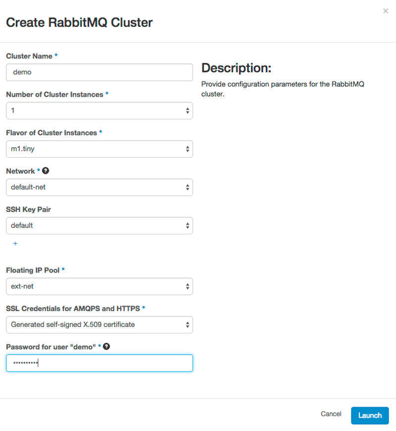
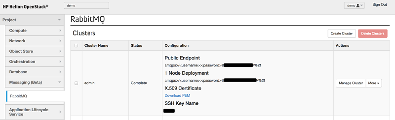
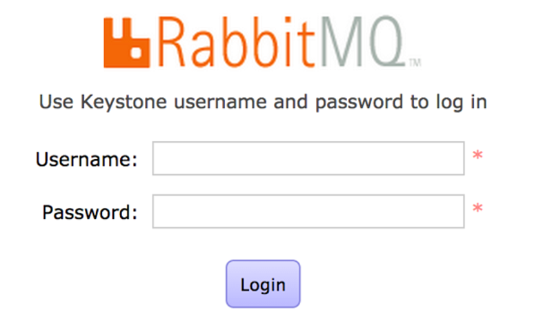
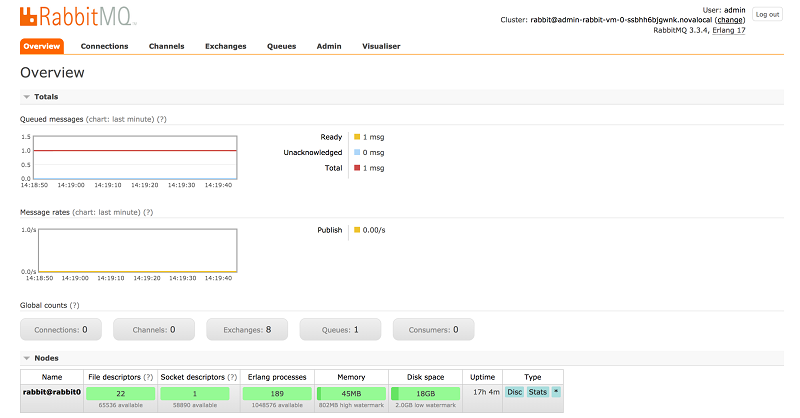

The Messaging Broker Service is a key aspect of applications architected for the cloud as it helps to create scalable and distributed applications. This is achieved by enabling your software applications and services to communicate with each other as sub-components of a larger-scale application while allowing you to incorporate data from users, devices, and data streams.
The Messaging Broker Service provisions RabbitMQ clusters that can be used for robust messaging in applications. For more information about RabbitMQ, see RabbitMQ Server Documentation.
For information on managing the Messaging Broker Service via Rest API, see Cue Rest API Documentation.
For information on managing the Messaging Broker Service via the Python client, see openstack/python-cueclient on GitHub.
The following topics explain how to create and manage an instance:
Prerequisites
- Install the HPE Helion Development Platformand configure the services.
Creating a RabbitMQ Cluster
The following guide will demonstrate how to deploy a multi-node RabbitMQ cluster using the Messaging Broker Service.
- Log into Horizon and open the Messaging panel under your project. Click on the RabbitMQ tab.
- Click the Create Cluster button.

- In the Create RabbitMQ dialog, specify the following information:
- Cluster Name - A name for the cluster that will be created.
- Number of Cluster Instances - the number of instances of RabbitMQ to have in the cluster. This can be 1, 3 or 5.
- Flavor of Cluster Instances - The flavor size to use when creating the RabbitMQ instances in the cluster.
- Network - The network to join the cluster to. This should be the network that your application will use to connect to the cluster.
- SSH Key Pair - A key pair to use when connecting to the cluster. You can choose to create one if one does not already exist.
- Floating IP Pool - A pool to choose a floating IP from to assign to the cluster.
- SSL Credentials - The certificate to use when interacting with RabbitMQ in the cluster.
- Password for user - The password for the user that is currently logged in.
- Click the Launch button.
- Open the RabbitMQ tab under the Messaging (Beta) panel and identify the
RabbitMQ cluster from the list that was created in the previous step. Wait for
the cluster to go to the Complete
state

- Your cluster is now ready to use.
Deleting a RabbitMQ Cluster
The following guide will demonstrate how to delete an existing RabbitMQ cluster.
- Log in to Horizon and open the Messaging (Beta) panel under your project. Click on the RabbitMQ tab.
- Identify the RabbitMQ cluster to delete from the list.
- Click the More button and then the Delete Cluster button.
Managing a RabbitMQ Cluster
RabbitMQ clusters have a built-in dashboard for managing the cluster; this allows you to view the current state and health of the cluster. The following steps will demonstrate how to manage an existing cluster.
- Log in to Horizon and open the Messaging (Beta) panel under you project. Click on the RabbitMQ tab.
- Identify the RabbitMQ cluster that you will manage from the clusters listed in the Clusters table.
- Click on Manage Cluster next to your cluster.

- A new browser window will open with the log-in screen for the RabbitMQ cluster. Enter the same username and password you used to log in to HPE Helion OpenStack® when creating the RabbitMQ cluster and select Login.

- The management console for RabbitMQ will open. In the management console you can perform tasks such as monitor the queues and message rates, check resource usage on the instances, manage user accounts, and many others.

More Information
-
For more information on using RabbitMQ and managing the RabbitMQ cluster, visit the RabbitMQ documentation site.
-
For more information using HPE Helion OpenStack visit the documentation.